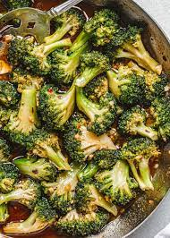

Broccoli Stir Fry
This broccoli stir fry is a fun way to get broccoli onto the table. The mix of flavors combine to make a DELICIOUS sauce that covers the crispy broccoli. Plus you get to cook this tasty meal in a Wok. What's not to love!

Ingredients
- 2 pounds steamed broccoli
- 2 teaspoons cornstarch
- 2 tablespoons water
- 1/3 cup Shaoxing wine or dry sherry
- 3 tablespoons soy sauce
- 2 tablespoons light brown sugar
- 1 teaspoon toasted sesame oil
- 3 tablespoons vegetable oil
- 4 slices fresh peeled ginger
- 4 large garlic cloves crushed
Directions
- Steam the broccoli until crisp and tender, then dry and set aside
- Stir together the water and the cornstarch until smooth
- Combine the wine, soy sauce, light brown sugar, and toasted sesame oil in a small bowl
- Place a Wok over high heat
- When it gets hot ass the vegetable oil and swirl until it gets very hot
- Add the ginger and garlic cloves
- Stir and press with the back of a spoon until the garlic is lightly golden, then remove and discard the ginger and garlic
- Add the broccoli and stir-fry until lightly covered in oil
- Pour wine mixture down the side of the pan and toss
- Reduce the heat, cover the wok, and cook for 30 seconds
- Stir the cornstarch mixture, add it to the wok, and stir to combine
- Cook uncovered until the sauce thickens, 1-2 minutes
My review:This is a quick and easy meal to throw together that tastes great and really shows off the versatility of the broccoli. Would definitely reccomend!